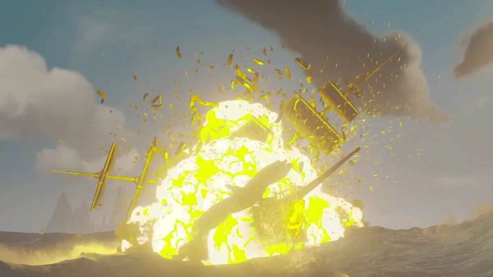

Banana Bomb

Description
An explosive treat prefered by legends upon the Sea of Theives. This dish will
blow away other crews leaving their treasure for the taking.
Ingredients
- 1 Gunpowder Keg
- 1 Unpeeled Banana
Steps
- Take out your spyglass to search for a pirate upon the horizon
- Set course and make way for their vessel
- Board the ship which you shall bestow a Banana Bomb
- Carefully place the Gunpowder Keg below deck near their stove
- Place a banana on the same cooking stove
- Remove ye self from the vessel at a safe viewing distance
- Wait about 5 minutes and enjoy the Banana Bomb!